Боевой экран
Основные действия в игре «Серп и Молот» происходят на экране, который отображает текущую игровую зону. Здесь вы управляете главным героем и его помощниками, исследуете местность, общаетесь с другими персонажами, собираете информацию и выполняете различные задания. Здесь члены вашей группы встречаются с противником и ведут с ним бой, проявляя своё тактическое искусство. На экран ваша группа попадает с карты региона после того, как вы выбирали зону, которую нужно исследовать или выполнить связанное с ней задание.
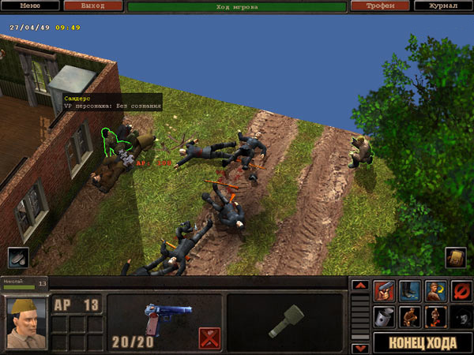
Боевой экран состоит из 3 основных частей: панели управления и индикации в верхней части, игрового поля в центре — это основная часть экрана и игровой панели в нижней части.
В верхней части экрана находится панель управления с 4 кнопками и табло в середине — индикатором текущего хода. Кнопки имеют следующие функции:
- Меню — вызывает игровое меню (его также можно вызвать клавишей [ F10 ] ).
- Выход — перейти из текущей игровой зоны на карту региона, эта возможность доступна только при определённых условиях (см. ниже «Выход из зоны»);
- Трофеи — выводит экран сбора трофеев (только в режиме реального времени);
- Журнал — выводит дневник главного героя.
Табло в средней части панели показывает текущее состояние игры. В режиме реального времени панель имеет зелёный цвет. В пошаговом режиме вид панели меняется:
Текущий ход |
Надпись и цвет фона |
Ход игрока |
"Ход игрока" на зелёном фоне |
Ход союзников и нейтральных персонажей |
"Ход дружественной стороны" на голубом фоне |
Ход противников |
"Ход противника" на красном фоне |
При ходе противников и союзников, т.е. сторон, находящихся под управлением компьютера, табло дополнительно служит индикатором процесса: полоса с повышенной яркостью движется слева направо по мере выполнения активными персонажами своих действий. В моменты, когда какой-либо персонаж заметил нового противника и произошёл перехват хода, табло мерцает ярко-жёлтым цветом.
Дата и время
Под кнопками «Меню» и «Выход» расположена строка, отображающая внутриигровую дату и время. Белым цветом выводится дата, год отображается двумя цифрами, например: 27/04/49 — 27 апреля 1949 года. Правее жёлтыми цифрами выводится текущее время в 24-часовом формате.
Время в игровом мире течёт быстрее: в непрерывном режиме 5 минут игрового времени проходят за 12 секунд реального времени. В пошаговом режиме каждый ход соответствует одной минуте игрового времени (при вашем очередном ходе время на размышление и команды персонажам у вас не ограничено).
Отслеживать текущее время может быть полезно по ряду причин, например:
- чтобы знать запас времени, оставшийся до начала текущего задания, если оно ограничено во времени (смотрите также записи в журнале);
- чтобы знать время суток, находясь в закрытых помещениях или под землёй;
- чтобы встретить (или не встретить) персонажей, находящихся на определённом месте в определённое время дня, — например, продавцов или должностных лиц;
- чтобы выбрать время для отдыха, находясь на базе.
Форма курсора в игре «Серп и Молот» контекстно-зависимая: при указании на объект он показывает действие выбранного персонажа, которое будет выполнено при нажатии левой кнопки мыши. Некоторые команды меняют курсор, придавая ему вид, соответствующий этой команде, до тех пор, пока команда не будет выполнена или отменена. Правая кнопка мыши на боевом экране управляет поворотом и наклоном камеры (см. «Управление камерой»).
Когда в пошаговом режиме вы отдадите вашему персонажу команду, требующую затрат AP, справа от курсора будут выводиться числа. Они показывают число единиц действия (AP), которое необходимо затратить персонажу, а для команд атаки — дополнительно вероятность успешного выполнения (шанс) в процентах. Если игра находится в режиме реального времени и команда атаки не требует затрат AP, рядом с курсором будет выводиться только вероятность (шанс).
Опишем курсоры и связанные с ними действия более подробно.
Общие курсоры
Курсоры этой группы служат для управления интерфейсом и информации о текущем состоянии игры.
| 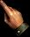 |
Курсор «указатель» в виде руки — стандартный курсор, служит для работы с меню, кнопками и другими элементами интерфейса в сервисных экранах, в окнах и панелях управления. На боевом экране используется для выбора персонажа и указания конечной точки передвижения текущему персонажу (персонажам). На панелях предметов этот курсор служит для взятия и перемещения предметов, которые «прикрепляются» к курсору. |
| 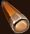 |
Курсор «маркер» в виде карандаша используется в экранах настроек для изменения настроек игры. На карте региона этот курсор позволяет выбрать место, в которое следует отправиться вашей группе. |
 |
Курсор «ожидание» показывает, что вам нужно подождать, пока игра выполнит внутренние операции. Например, он выводится в течение всего хода противника или при операциях чтения/записи момента игры на диск. Пока такой курсор остаётся на экране, кнопки на игровой панели будут неактивны, вы можете лишь управлять камерой. |
| 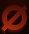 |
Курсор «недоступно» выводится в ситуации, когда то или иное действие по определённым причинам невозможно. Например, вашему персонажу не хватает единиц действия (AP) для выполнения выбранной команды. Отложите команду на следующий ход или выберите другую команду. Другой вариант — вы хотите выполнить действие предметом, который неспособен на это, например, выстрелить из заклиненного или сломанного оружия. Почините оружие или возьмите в руки другое, исправное. |
Курсоры действия
Курсоры этой группы появляются преимущественно на боевом экране и служат для команд вашим персонажам — действовать с предметами или взаимодействовать с другими персонажами.
| 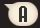 |
Курсор «диалог» появляется при наведении на персонажа, с которым можно поговорить. Обычно такой персонаж относится к дружественным (выделяется зелёным контуром) или нейтральным (выделяется голубым контуром). Чтобы начать диалог, щёлкните курсором по персонажу. |
 |
Курсор «действие» появляется при наведении на объект, с которым по умолчанию связано какое-то действие. В чём заключается это действие, несложно понять из ситуации и самого предмета. Например, при наведении курсора на лежащее тело — поднять для переноски. Чтобы выполнить действие, щёлкните курсором по предмету. |
| 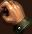 |
Курсор «взять» в виде руки, держащей предмет, появляется при наведении на предмет, который персонаж может поднять и взять с собой. Если необходимо поднять сразу несколько предметов, можно нажать клавишу , тогда над предметами появятся надписи (см. раздел «Действия с предметами»). Чтобы взять предмет, достаточно щёлкнуть курсором по соответствующей надписи. |
 |
Курсор «открыть» в виде двери возникает при наведении на дверь, дверцу шкафа, крышку ящика и т.п., которую можно открыть или закрыть без специального инструмента. В пошаговом режиме справа от курсора выводится суммарное значение AP, которое требуется персонажу, чтобы подойти и открыть дверь. |
 |
Курсор «инструмент» появляется при наведении на объект, действие с которым требует специального инструмента. Например, для открытия запертой двери необходимо иметь ключ или отмычку, для разминирования — щуп или проволоку, для ремонта отказавшего оружия — ремонтный набор, во всех случаях используется инженерный навык. Инструмент становится активным, если персонаж держит его в руках. |
 |
Курсор «зарядить» появляется при наведении на персонажа противника, если в текущем оружии кончились патроны. При нажатии левой кнопки мыши оружие перезарядится (чтобы избежать перезарядки, можно взять в руки другое заряженное оружие). |
| 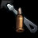 |
Курсор «разблокировка» выводится при наведении на объект атаки, если текущее оружие заклинило (синего цвета). В пошаговом режиме рядом с курсором выводится значение AP, которые нужно для этого затратить. Чтобы разблокировать оружие, щёлкните курсором по объекту атаки. |
 |
Курсор «починка» появляется при выборе кнопки «разблокировка» на панели предметов персонажа и используется для приведения в нормальное состояние заклиненного оружия (синего цвета). В пошаговом режиме справа от курсора выводится расход AP, необходимых для починки. |
 |
Курсор «разрядить» появляется при нажатии кнопки «разрядить» в интерфейсе предметов персонажа. Разрядить можно любое переносное оружие, которое есть у персонажа. Щёлкните курсором по оружию, оно будет разряжено, а боеприпасы появятся в окне предметов (в «рюкзаке») и станут доступны для использования. Затрат AP для разрядки не требуется. Чтобы отменить этот режим, нажмите кнопку «разрядить» ещё раз. |
| 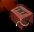 |
Курсор «минировать» используется для указания персонажу, где следует установить мину. Он выводится после выбора команды «минировать» на игровой панели и выводится постоянно, пока команда не будет выполнена или отменена. Он также появляется в режиме установки гранаты как ловушки-растяжки при наведении на минируемый объект (например, на дверь или окно). Для закладки мины или установки ловушки щёлкните курсором по выбранному месту. Установленные вами мины и ловушки выделяются на местности белым контуром. |
 |
Курсор «смотреть» используется для указания персонажу, в каком направлении он должен развернуться и смотреть. Курсор появляется на боевом экране после выбора команды «смотреть». Поворот на месте требует 2 AP, и число у курсора не выводится. Чтобы отдать команду, укажите направление или щёлкните по конкретному предмету, при этом не важно, находится предмет в пределах зрения персонажа или нет. |
 |
Курсор «обмен» служит для обмена местами с дружественным или нейтральным персонажем (с голубым контуром), если вплотную рядом с ним стоит ваш выбранный персонаж. Обмен может быть полезен в узких проходах, на лестницах и т.д. В пошаговом режиме рядом с курсором выводятся 4 AP, необходимых для обмена. Поменяться местами с другим членом вашей группы или противником этим способом нельзя. |
 |
Курсор «лечение» появляется при выборе команды «лечение» на игровой панели или при наведении курсора на любого члена группы (в том числе на себя), если персонаж держит в руках один из медицинских предметов. В пошаговом режиме справа от курсора выводится суммарное значение AP, которое включает путь к раненому и начало лечения. Чтобы начать лечение, щёлкните по фигуре пострадавшего или по закладке с его именем на игровой панели. |
Курсоры атаки
Курсоры этой группы появляются только на боевом экране и отображают команды, которые вы должны отдавать вашим персонажам для атаки противника. Вид курсора соответствует виду атаки и определяется текущим оружием, которое держит в руках выбранный персонаж. Курсор принимает соответствующий вид при наведении на фигуру противника или его иконку. Кроме того, эти курсоры дают возможность атаковать любые окружающие предметы, для этого служит кнопка «атака» на игровой панели. Справа от курсора выводятся вероятность попадания в указанный объект и число единиц действия (AP), требуемое для атаки. Чтобы начать атаку, щёлкните курсором по противнику или его иконке, либо по выбранному объекту (цели или участку поверхности).
Вы можете атаковать цель несколькими персонажами одновременно, если все они используют оружие, относящееся к одному классу (например, огнестрельное оружие или гранаты). Тогда справа от курсора будут выводиться по два числа — минимальное и максимальное значения вероятности попадания и AP среди всех выбранных персонажей.
 |
Курсор «целиться/стрелять» обозначает атаку огнестрельным оружием и используется в нескольких ситуациях. Во-первых, он указывает на персонажа противника или объект, который необходимо атаковать. Для выстрела ваш персонаж должен держать в руках заряженное оружие. Во-вторых, этот курсор используется для прицеливания в режиме снайперской стрельбы (выстрела при прицеливании не происходит, необходима отдельная команда). Более подробно см. раздел «Снайперская стрельба». |
| 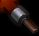 |
Курсор «атака гранатой» появляется по команде «атака», если персонаж держит в руках гранату. Целью броска может быть фигура противника или точка поверхности, которая будет центром взрыва. Справа от курсора выводится вероятность попадания (при наведении на персонажа — вероятность попасть под ноги) и необходимое число AP. |
| 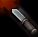 |
Курсор «атака холодным оружием» возникает на боевом экране при наведении на противника или по команде «атака», если персонаж держит в руках холодное оружие (нож, дубинку, метательное оружие и т.п.). Для увеличения поражающего эффекта можно нанести удар в определённую часть тела противника. |
 |
Курсор «рукопашная атака» появляется на боевом экране при наведении на противника или по команде «атака», если ваш персонаж не вооружён. |
 |
Курсор с полем «прицельная атака» появляется вместо одного из атакующих курсоров, если при наведении на фигуру или иконку противника нажать клавишу цифрового поля, которая соответствует определённой части тела. Справа от курсора выводится вероятность попадания в выбранную часть тела и необходимые затраты AP. Прицельно атаковать можно только видимые фигуры людей. Более подробно см. раздел «Прицельная атака». |
На игровом поле отображается часть текущей зоны, на которой вы находитесь. Управляя камерой, вы можете осматривать любой участок местности и находящиеся на нём предметы — растительность, дороги, строения и т.д., переключать этажи строений, выводимые на экран, менять масштаб изображения. Увидеть персонажей противника и нейтральных персонажей, а также заметить лежащее оружие, боеприпасы и предметы снаряжения можно только в пределах поля зрения ваших персонажей и их союзников.
Информация о персонаже, здоровье и урон
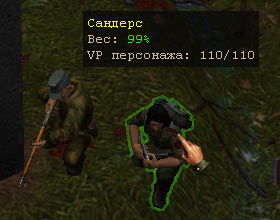
Если навести курсор на какого-либо видимого персонажа, над этим персонажем появится подсказка. Её содержание зависит от принадлежности персонажа. Для членов вашей группы всегда выводится имя, текущая нагрузка (в процентах) и состояние здоровья (текущее VP / максимальное VP).
Величина нагрузки полезна для оценки общих способностей персонажа к действиям. При нормальной нагрузке (ниже 100%, зелёные цифры) персонаж может действовать в полном объёме. При перегрузке (100% и выше, красные цифры) максимальное значение AP персонажа снижается по мере роста нагрузки.
Значения VP показывают численное состояние здоровья персонажа (в отличие от полосы на закладке, показывающей относительную долю, см. ниже). Текущее значение VP — это сумма «неповреждённой» и «перевязанной» частей здоровья. Несовпадение цифр говорит о том, что часть ранений персонажа не перебинтована, и это может отрицательно сказаться на его способности к действиям.
У персонажей, относящихся к другим группам (противники и нейтральные), вместо имени обычно выводится принадлежность к группе или профессия. Внимание! Сюжетные персонажи, общение с которыми может быть вам полезно (сейчас или в будущем), часто названы по имени. Используйте это как подсказку, чтобы отличить их от обычных нейтральных персонажей.
Для всех персонажей, кроме ваших, выводится примерная оценка их здоровья (VP), от «здоров» до «критически ранен». Однако если в группе есть медик, способный визуально определить здоровье на расстоянии (необходимо соответствующее умение), вместо оценки будет выводиться точное текущее значение VP.
При получении урона любыми персонажами, находящимися в поле вашего зрения, над ними отлетают цифры красного цвета, соответствующие величине урона. Эти величины и общая оценка здоровья того или иного персонажа могут помочь вам принять соответствующее решение — например, выбрать наиболее слабого противника для атаки, или отыскать союзника, которому в первую очередь необходимо лечение.
Противники и их иконки

Над персонажами противника, которых видит один из ваших персонажей или кто-либо из ваших союзников, всегда выводится иконка головы в каске — цветная на красном фоне или серая. Персонажи, не относящиеся к противнику, таких иконок не имеют. Цвет конкретной иконки зависит от того, в чьём поле зрения находится персонаж противника:
- Красная — противника видит текущий персонаж или кто-то из выбранной группы;
- Серая — противника видит невыбранный персонаж или ваш союзник.
Неизвестные персонажи, которых члены вашей группы обнаружили на слух, но не видят, отмечаются иконкой с изображением уха и стоящим полупрозрачным силуэтом красного цвета. Такая иконка может указывать как на противника, так и на нейтрального персонажа (например, гражданских лиц).
Когда видимый кем-то противник или услышанный персонаж находится за пределами участка местности, отображённого на экране, его иконка располагается на границе игрового поля, указывая направление, куда нужно сдвинуть камеру, чтобы увидеть предмет или персонажа. Дополнительно иконка приобретает форму капли, показывая направление своей острой частью.
Состояние персонажей противника
Специальный набор из 4 иконок даёт вам возможность оценивать состояние противников, которое определяет их поведение:
| 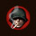 |
Противник не подозревает об опасности. В этом состоянии к нему легче подкрасться, а удачная внезапная атака, в том числе холодным оружием из-за спины даёт существенное преимущество по величине урона. |
| 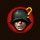 |
Противник знает об опасности и ищет членов вашей группы или ваших союзников, но ещё не видит. В это состояние противники переходят, услышав звук выстрела либо обнаружив раненого или убитого персонажа. |
 |
Противник видит вас и начал сражение. В таком состоянии шансы подкрасться к нему незамеченным и нанести внезапный урон очень малы. |
| 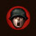 |
Противник деморализован и не может оказать серьёзного сопротивления. Как правило, это происходит после внезапного нападения либо если противник получил значительный урон или критическое поражение. |
Чтобы определить состояние противников, ваши персонажи должны их видеть. Состояние противников, находящихся за пределами поля зрения, им неизвестно. Чтобы узнать состояние конкретного противника, вам нужно переключиться на члена группы, который видит этого противника.
Иконки мин и ловушек
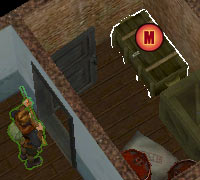
В некоторых местах игровой зоны могут находиться заложенные мины или гранаты-ловушки, установленные на открывающиеся двери (дверцы) или окна. Взрывоопасные предметы, о которых известно членам вашей группы, обозначаются специальным знаком — красный кругом с буквой «М», и ваши персонажи будут их обходить. Известными считаются все мины или ловушки, установленные вашими персонажами, а также мины и ловушки противника, обнаруженные благодаря навыку «наблюдательность».
Действия с иконками по умолчанию
Если щёлкнуть левой кнопкой мыши по иконке предмета, это означает команду текущему персонажу подойти и взять этот предмет (у персонажа должно быть достаточно места в «рюкзаке» или свободные руки). Щелчок по иконке персонажа противника или персонажа, замеченного на слух, означает команду атаковать этого персонажа — например, выстрелить по нему. Внимание! Атаковать прицельно можно только видимых персонажей.
Щелчок правой кнопкой мыши по иконке любого предмета или персонажа центрирует камеру на этот предмет или этого персонажа.
Выделение персонажей и предметов контуром
Многие предметы и видимые персонажи при наведении на них курсора мыши отмечаются цветным контуром (интерактивное выделение). Цвет контура определяется принадлежностью персонажа или свойствами предмета:
зеленый |
член группы; предмет, который можно использовать |
синий |
дружественный персонаж (союзник) |
циановый |
нейтральный персонаж |
красный |
персонаж противника |
белый |
опасный предмет (мина или ловушка) |
При входе в зону камера обычно занимает стандартное положение, показывая местность из-за спины ваших персонажей. Чувствительность управления камерой при сдвиге мыши или по командам клавиатуры можно изменить в экране настроек.
Сдвиг камеры осуществляется курсором мыши, если подвести его вплотную к границам или углам экрана. С помощью клавиатуры сдвиг осуществляется клавишами управления: [ влево ] , [ вправо ] , [ вверх ] и [ вниз ] . Для перемещения камеры по диагонали нужно одновременно нажать две клавиши, соответствующие этой диагонали — например, комбинация [ вправо ] + [ вверх ] будет сдвигать камеру в направлении правого верхнего угла экрана. Если щёлкнуть по портрету персонажа на игровой панели, камера установит вид игрового поля с этим персонажем в центре. Для центровки с помощью клавиатуры нажмите клавишу [ Home ] .
Сдвиг камеры с неподвижным курсором позволяет сдвигать камеру мышью, не меняя положения курсора на экране. Сдвиг выполняется перемещением мыши в нужном направлении при нажатой и удерживаемой правой кнопке мыши и клавише [ Ctrl ] или при нажатой и удерживаемой средней кнопке мыши (роль кнопки может играть колесо прокрутки).
Изменение масштаба изображения даёт возможность «приблизить» или «удалить» камеру от точки, на которую она направлена. Оно выполняется с помощью колеса прокрутки мыши или с помощью клавиш [ Page Up ] и [ Page Down ] . Обычно камера находится на определённом «стационарном» расстоянии от поверхности, его можно изменять в некоторых пределах. Нажатие и удержание одной из этих клавиш даёт возможность выйти за «стационарные» пределы приближения и удаления камеры. Это полезно, если вы хотите близко рассмотреть мелкие предметы или детали персонажа или, наоборот, увидеть панораму сцены. После отпускания клавиши камера плавно вернётся в ближайшее «стационарное» положение.
Повороты и наклоны камеры дают возможность подобрать наиболее выгодный ракурс или точку зрения на ваших персонажей или на персонажей противника. Они выполняются клавишами [ влево ] , [ вправо ] , [ вверх ] и [ вниз ] при нажатой клавише [ Ctrl ] . С помощью мыши повороты и наклоны выполняются сдвигом мыши в том или ином направлении при нажатой правой кнопке. Направление поворота и наклона камеры в ответ на сдвиг мыши в горизонтальном и вертикальном направлениях можно поменять в «настройках».
В нижней части экрана находится игровая панель, с помощью которой вы можете управлять действиями персонажей. Справа над игровой панелью находится кнопка «предметы», выводящая панель предметов выбранного персонажа, а слева — кнопка «информация», которая выводит информационную панель.

Игровая панель включает следующие части: слева — группа закладок персонажей, портрет текущего персонажа и его состояние, в центре — два окна предметов, которыми персонаж готов пользоваться в данный момент, справа — линейка переключения этажей здания и поле команд с набором кнопок, справа внизу — кнопка «Начать бой» / «Конец хода».
Закладки персонажей
Группа закладок позволяет быстро оценить состояние всех ваших персонажей. На каждой закладке выводится имя (псевдоним) персонажа, под ним — цветная полоса здоровья и текущий запас AP. Закладки используются для выбора персонажа, для передачи предметов и для лечения. Двойной щелчок по закладке одного из персонажей выбирает его и центрирует камеру на этого персонажа.
Полоса здоровья позволяет быстро оценить текущее состояние персонажа. Зелёный цвет показывает текущий уровень здоровья (VP) по сравнению с максимальным VP для этого персонажа. Красным цветом выводится часть VP, отнятая из-за полученных ранений. Розовый цвет показывает «перевязанные» ранения с остановленным кровотечением, эта часть здоровья не ухудшает способности персонажа к действиям.
Текущий запас AP на закладках помогает определить, кто из ваших персонажей имеет запас действий в текущем ходу, чтобы не передать ход противнику слишком рано.
Выбор персонажа и группы
В любой момент игры кто-либо из ваших персонажей обязательно выбран, его портрет отображается на игровой панели. На местности выбранный персонаж отмечается контуром зелёного цвета. Чтобы выбрать (т.е. сделать текущим) какого-либо персонажа, щёлкните курсором по его закладке. Вы также можете найти фигуру персонажа на местности и щёлкнуть по ней. Клавиша [ Tab ] служит для выбора следующего члена группы (слева направо по расположению закладок и далее по кругу). Двойной щелчок по портрету текущего персонажа центрирует на нём камеру.
Чтобы выбрать нескольких персонажей одновременно, нажмите и удерживайте клавишу [ Ctrl ] или [ Shift ] , после этого щёлкните по закладкам тех персонажей, которых хотите включить в группу. Вы также можете воспользоваться «резиновой рамкой" на игровом поле. Для этого мысленно представьте себе прямоугольник, включающий нужных персонажей. Подведите курсор на место одной из вершин прямоугольника, нажмите левую кнопку мыши и, не отпуская её, проведите курсор по диагонали к противоположной вершине. Выделенный участок местности будет отображаться прямоугольником с более тёмным фоном. После отпускания левой кнопки все персонажи, попавшие внутрь прямоугольника, будут выбраны. После выбора группы на игровой панели появятся портреты всех ваших персонажей; те, кто вошёл в группу, будут смотреть в вашу сторону. Чтобы выбрать всех членов группы, нажмите клавишу [ = ] . Чтобы убрать какого-либо персонажа из группы, щёлкните по нему или по его закладке, удерживая клавишу [ Shift ] .
Вы можете отдать команду выбранному персонажу, а если выбрана группа — одновременно всем персонажам, входящим в группу. Чтобы расформировать группу, щёлкните по закладке любого из её членов.
Окно состояния персонажа
Окно текущего состояния персонажа включает две части. Верхняя часть служит для отображения текущего значения AP. Нижняя часть с 6 ячейками используется для вывода иконок критических поражений (критическими считаются поражения, которые ухудшают те или иные способности персонажа, см. «Введение в игру»). Подробное описание поражения можно прочитать в контекстной подсказке при наведении курсора на иконку. В подсказке можно посмотреть поражённую часть тела, величину поражения и продолжительность действия в ходах (для временных поражений). Цвет иконки определяется продолжительностью поражения: временные поражения имеют иконки синего цвета, постоянные — красного.
В таблице приведены различные виды иконок состояния персонажа (более подробно о поражениях и их лечении см.: «Ролевая и боевая система», «Критические поражения»). К иконкам с временным поражением есть парные с постоянным и наоборот (для них показана одна из двух возможных иконок):
| 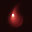 |
Критическое кровотечение (всегда постоянное) |
| 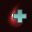 |
Остановленное кровотечение (потеря VP за ход уменьшена на эту величину) |
 |
Временное оглушение |
|
Постоянное уменьшение здоровья ( VP ) |
 |
Временное уменьшение действий ( AP ) |
|
Постоянное уменьшение точности попадания |
 |
Временное ухудшение зрения |
 |
Постоянная потеря способности действовать руками |
| 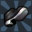 |
Временная потеря способности двигаться |
|
Постоянная потеря слуха |
 |
Персонажу оказывается медицинская помощь |
| 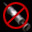 |
Лечение медикаментами временно недоступно |
Окна предметов
В центре игровой панели расположены два окна для предметов, принадлежащих текущему персонажу, которые готовы к немедленному использованию. Один из предметов персонаж держит в руках, такой предмет считается основным и выводится в окне обычным цветом. Предмет в другом окне считается дополнительным и выводится более тусклым цветом с более тёмным фоном. Дополнительный предмет легко сделать основным (т.е. дать персонажу в руки), щёлкнув по нужному окну, и наоборот. Затраты AP на переключение текущих предметов не требуются.
Некоторые предметы (например, боеприпасы) нельзя дать персонажу в руки. Если в окне находится оружие, расходующее боеприпасы, рядом с ним выводится кнопка перезарядки с изображением боеприпаса. Цвет кнопки указывает на возможность перезарядки оружия в данный момент: если у персонажа недостаточный запас AP, кнопка имеет синий оттенок и недоступна. Если у персонажа не осталось нужных боеприпасов (обойм), кнопка будет перечёркнута крест-накрест красными полосами. Для перезарядки в бою необходимо иметь снаряженные магазины или обоймы к текущему оружию (см. ниже «Использование оружия и предметов»).
Чтобы убрать предмет в «рюкзак» или заменить его на другой, откройте панель предметов персонажа (нажмите кнопку справа над игровой панелью или клавишу [ I ] ), щёлкните по нужному предмету, чтобы он оказался «прикреплённым» к курсору, и перенесите его в окно, а предыдущий верните на панель (на ней должно оставаться достаточно места, при необходимости нажмите кнопку «упорядочить»). Для предмета требуется стандартный расход 4 AP на каждое действие по перекладыванию (выводится под курсором). Например, чтобы поменять оружие в руках на оружие, которое лежит в «рюкзаке» персонажа или висит у него за спиной, а первое убрать в «рюкзак», требуется 8 AP.
Действия с предметами
Увидев лежащий предмет, наведите на него курсор: он примет вид сжатой руки, рядом появится величина AP, которую нужно затратить, чтобы его взять, а сам предмет будет выделен зелёным контуром. Чтобы взять предмет, щёлкните по этому предмету. Персонаж может взять что-либо, если у него есть место, куда можно положить этот предмет, — одно из двух текущих окон или место в «рюкзаке». Если свободного места на панели предметов не хватает, можно попробовать расположить предметы более компактно, нажав кнопку «упорядочить» или вручную. Можно также передать предмет другому персонажу или выбросить ненужный предмет.
Если при взятии лежащего предмета панель предметов открыта, он не будет положен на место автоматически, а останется «прикреплённым» к курсору. Вы можете сами решить, положить его в «рюкзак» или дать в руки персонажу. Перекладывание предмета требует расхода 4 AP, для обмена 2 предметов местами расход удваивается — 8 AP. При недостатке AP предмет можно бросить под ноги (бросание не требует расхода AP) и поднять на следующем ходу.
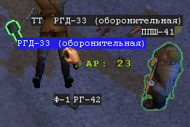
Некоторые предметы имеют слишком малый размер, плохо видны, и их трудно найти курсором. Чтобы увидеть положение и название лежащих предметов, нажмите и удерживайте клавишу [ Alt ] . Над каждым предметом, который попал в поле зрения кого-либо из ваших персонажей, появится надпись с его названием. Чтобы взять предмет, достаточно щёлкнуть по этой надписи. Затем клавишу [ Alt ] можно отпустить. Такой способ годится для подбора любых предметов, особенно он удобен для предметов, лежащих в ящиках.
Для подбора всех обнаруженных вашими персонажами предметов удобно использовать экран сбора трофеев, который открывается по кнопке «Трофеи» на панели управления игрой. Подробно этот экран описан в разделе «Экраны кампании».
Чтобы выбросить предмет, возьмите его курсором мыши и щёлкните по какой-нибудь точке ландшафта. Персонаж бросит предмет в указанном направлении неподалёку от себя. Брошенный предмет можно потом снова поднять.
Лежащие тела — находящихся в бессознательном состоянии или убитых персонажей можно поднимать и переносить на себе. При наведении курсора на лежащее тело он примет вид «действие», рядом с курсором будет показан расход AP. Чтобы начать действие, щёлкните по телу курсором. В процессе переноски нельзя выполнять какие-либо действия с оружием, предметами, менять позу и т.д. Скорость передвижения при переноске намного меньше, чем при обычной ходьбе. Персонаж, несущий тело, не может подтягиваться, спрыгивать, подниматься и спускаться по вертикальным лестницам. При необходимости можно бросить тело, нажав соответствующую кнопку в поле команд, затрат AP на это не требуется.
Обмен предметами
Чтобы передать предмет другому персонажу, захватите его курсором мыши и перенесите на закладку персонажа, который должен его получить. Если персонажи стоят рядом, расходуется 10 AP, иначе к этой величине нужно прибавить AP, необходимое для подхода к персонажу-получателю предмета. Чтобы завершить передачу предмета, щёлкните по закладке персонажа или по его фигуре на местности. Обратите внимание, что курсор вместе с предметом имеет большую площадь; вам нужно попасть по закладке или фигуре активной областью курсора, т.е. указательным пальцем (если вы не попали, значение AP показано не будет). У персонажа, который должен получить предмет, должно быть свободно одно из полей предметов или достаточно места в сумке. Предметы таким образом можно передавать только членам своей группы.
Внимание! Если вам необходимо передать какой-либо предмет нейтральному (сюжетному) персонажу, выберите главного героя и начните диалог с этим персонажем. Для обмена предметами с врачом или торговцем используйте интерфейс магазина.
Переключение этажей
Вертикальная линейка переключения уровня отображаемых этажей находится между окнами предметов и полем команд. Переключение этажей не влияет на положение камеры, происходит лишь «снятие» части строения для лучшего обзора того, что находится внутри. Переключатель позволяет опустить текущий уровень ниже уровня земли, например, для осмотра подвалов вашими персонажами. Переключать этажи можно мышью, нажимая кнопки со стрелками по краям линейки, но проще использовать клавиши [ Num_+ ] (плюс) и [ Num_- ] (минус) на дополнительной цифровой клавиатуре. Знак «+» позволяет переключиться на более высокие этажи вплоть до вида на уровне крыш зданий; знак «-», наоборот, «снимает» этажи и понижает вид вплоть до подземных уровней.
Поле команд
Правая часть игровой панели содержит кнопочное поле команд, состоящее из 8 кнопок, и кнопки «Конец хода». Некоторые кнопки этого поля работают как меню верхнего уровня: их нажатие приводит к выводу на панель новых кнопок, которые включают разные варианты данной команды. Для отмены выбора и возврата к обычному набору команд служит кнопка «Отмена». Более подробно команды управления персонажами рассматриваются в следующем разделе.
Кнопка «Конец хода»
Эта кнопка в основном используется в пошаговом режиме для передачи хода противнику. В режиме реального времени эта кнопка имеет функцию «Начать бой» с одновременным переходом в «пошаговый режим». Она полезна, чтобы начать атаку противника, не дожидаясь, пока он вас увидит и игра автоматически переключится в пошаговый режим. После нажатия кнопки «Начать бой» программа обрабатывает текущую ситуацию, учитывая приоритет каждой из сторон, и принимает решение, чей будет первый ход. Если противник вас не заметил, то ваш персонаж скорее всего будет ходить первым.
действо-вать
( A ) |
двигать-ся
( M ) |
смотреть
( L ) |
отмена
( Esc ) |
 |
режим
атаки |
режим
движе-ния |
держать
ориента-цию |
режим
маски-ровки |
Наиболее частые команды персонажами можно отдавать непосредственно на местности, указав конечную точку движения или показав курсором на предмет, с которым связано определённое действие по умолчанию (например, атаковать противника). Доступ к полному набору команд происходит через кнопочное поле в правой части игровой панели, многие команды можно ввести с клавиатуры. В основном режиме выводятся следующие кнопки:
Действовать (атаковать, лечить, установить мину и т.д.) — вид этой кнопки зависит от назначения предмета, находящегося в руках персонажа. Нажатие кнопки выводит один из курсоров действия или атаки, которым можно выбрать цель или объект действия. Затраты AP выводятся рядом с курсором. Клавиатурная команда: [ A ] .
Двигаться — нажатие кнопки позволяет указать персонажу точку на местности, куда он немедленно начнёт двигаться. Если путь был намечен заранее, на кнопке выводится жёлтая стрелка. Тогда нажатие кнопки продолжит движение персонажа к цели. Эта же стрелка появляется, если персонаж не достиг конечной точки пути за один ход и остановился; нажатие кнопки на следующем ходу позволяет продолжить движение. Затраты AP выводятся в круге в конце пути. Клавиатурная команда: [ M ] .
Смотреть — кнопка служит для команды «смотреть в указанном направлении». При её нажатии выводится курсор «смотреть», которым можно задать направление взгляда персонажа. Выполнение команды требует расхода 2 AP. Клавиатурная команда: [ L ] .
Отменить — эта кнопка служит для отмены ранее отданной команды, пока она не выполнена. Затраты AP не требуется. Клавиатурная команда: [ Esc ] .
навскид-ку
( Q ) |
прицель-ный
( W ) |
меткий
( E ) |
снайпер-ский
( T ) |
| 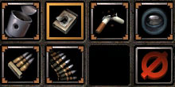 |
короткая
очередь ( F ) |
длинная
очередь ( G ) |
|
отмена
( Esc ) |
Режим атаки (стрельба, граната) — нажатие этой кнопки выводит меню следующего уровня, в котором можно выбрать один из доступных режимов атаки из текущего оружия. Для стрелкового оружия доступные режимы определяются видом оружия, для гранат предусмотрены 2 вида действий — бросок и установка ловушки. После выбора режима атаки в этом поле выводится кнопка, показывающая выбранный режим. Этот режим запоминается для каждой единицы оружия, он восстанавливается при переключении оружия или при перекладывании его с панели предметов в активное окно. Затраты AP на переключение режима не требуются. Клавиатурные команды: [ [ ] — предыдущий режим, [ ] ] — следующий режим; [ Q ] , [ W ] , [ E ] — выстрел навскидку, прицельный выстрел, меткий выстрел; [ F ] , [ G ] — короткая очередь, длинная очередь; [ T ] — режим снайперской стрельбы.
 |
бежать( Z ) |
идти
( X ) |
красться
( C ) |
ползти
( V ) |
Режим передвижения — кнопка выводит меню следующего уровня, где можно выбрать один из режимов передвижения персонажа: бежать, идти, красться и ползти (им соответствуют три позы в состоянии покоя: стоять, присесть и лежать). Текущий режим передвижения отображается пиктограммой в кнопке переключения режима. Смена режима передвижения или позы требует затрат AP, которые выводятся в контекстной подсказке рядом с курсором. Клавиатурные команды: [ Z ] , [ X ] , [ C ] , [ V ] — «бежать», «идти», «красться», «ползти».
Удерживать ориентацию — эта кнопка включает и выключает режим передвижения, при котором персонаж сохраняет свою ориентацию (направление взгляда). При включенном режиме кнопка выделяется жёлтой рамкой. Держать ориентацию можно только в режимах передвижения «идти» и «красться», в остальных режимах эта команда недоступна. Затрат AP на переключение режима не требуется. Клавиатурная команда: [ D ] .
Режим маскировки — нажатие этой кнопки заставляет персонаж замаскироваться, что делает его менее заметным для противника. На экране вокруг персонажа появляется тёмный ореол. При включенном режиме кнопка выделяется жёлтой рамкой. Для маскировки необходим расход AP (выводится в контекстной подсказке рядом с курсором), для отмены маскировки затрат AP не требуется. Обратите внимание, что маскировка возможна не всегда. Во-первых, она недоступна днём или рядом с источником света. Во-вторых, маскировка возможна лишь до тех пор, пока противник не обнаружил вашего персонажа. На вероятность обнаружения также влияет одежда — например, в полевых условиях одежда защитного цвета увеличивает шанс персонажа к маскировке.
Подсказка: если у одних ваших персонажей возможность маскировки есть, а у кого-то она отсутствует, это значит, что либо поблизости находится противник, который видит этого персонажа (при этом сам противник может быть замаскирован), либо ваш персонаж слишком хорошо освещён. Попробуйте сменить позу (например, лечь) или спрятаться за укрытием. Проверьте, насколько одежда персонажа соответствует окружающей местности, при необходимости смените её. Как только противник потеряет возможность вас обнаружить, способность персонажа к маскировке восстановится.
Снятие режима маскировки происходит при любом действии, которое сопровождается шумом, — стрельбе из огнестрельного оружия без глушителя или метании гранаты.
Режимы передвижения
Чтобы персонаж начал передвижение, необходимо указать ему конечную точку пути. В режиме реального времени достаточно щёлкнуть курсором по конечной точке, в пошаговом режиме щелчок по конечной точке прокладывает маршрут, а для начала движения требуется или выполнить двойной щелчок, или нажать кнопку «двигаться». Если персонаж находится в режиме «ходьба», двойной щелчок по конечной точке маршрута в режиме реального времени переводит его в режим «бег». Рассмотрим разные режимы передвижения, их достоинства и недостатки.
Бег наиболее эффективен, чтобы быстро преодолеть большие расстояния, он требует минимальных затрат AP на единицу пути. Однако бег делает персонажа более заметным. Закончив бежать, персонаж имеет меньше шансов попасть в цель в том же ходу. С другой стороны, по персонажу, который много перемещался в текущем ходу, вероятность попасть меньше. Клавиатурная команда: [ Z ] .
Ходьба — наиболее частый способ передвижения, расход AP средний. Только в этом режиме можно нести тело другого персонажа (при переноске тела скорость существенно падает). Клавиатурная команда: .
Если необходимо перемещаться по возможности скрытно, лучше двигаться крадучись. В таком состоянии немного легче приблизиться к противнику сзади, чтобы нанести ему неожиданный удар холодным оружием или выстрелить в упор. Присевший персонаж представляет собой менее удобную мишень для атаки противника, чем стоящий. Скорость передвижения меньше, чем при ходьбе, расход AP на единицу пути больше. Клавиатурная команда: [ C ] .
Передвижение ползком — самое медленное, персонаж практически бесшумен и его труднее всего обнаружить. Однако ползание требует максимальных затрат AP на единицу пути. Чтобы персонаж мог лечь, вокруг него должно быть достаточно свободного места. Клавиатурная команда: [ V ] .
Путь передвижения
Если персонажу указать мышью точку местности, возможный путь к ней будет показан цветной пунктирной линией, а конечная точка обозначена цветным кружком. В режиме реального времени линия всегда выводится зелёным цветом. В пошаговом режиме цвет линии может меняться на разных участках, а внутри кружка будет выводиться количество AP, необходимое для движения в указанную точку. Участок пути, на котором затраты AP не уменьшат способность персонажа атаковать текущим оружием, отображается зелёной линией. Участок, на котором персонаж должен будет «заимствовать» часть AP, предназначенных для атаки, отображается линией жёлтого цвета. Тот участок, куда персонаж не сможет добраться за текущий ход, будет показан красным. Примечание: если у персонажа установлен режим атаки, использующий всё доступное количество AP (меткий выстрел или длинная очередь), путь всегда будет начинаться с жёлтого цвета.
Если выбрано несколько персонажей и у них установлены разные способы передвижения, то по команде «двигаться» они начнут передвигаться каждый по-своему. Чтобы перевести выбранных персонажей в один режим, установите его, нажав одну из кнопок в поле команд или соответствующую клавишу.
Видимость и слышимость
Все персонажи способны видеть местность в секторе 180 градусов перед собой, видимость со стороны спины отсутствует. Расстояние, на котором персонажи способны видеть противника, зависит от времени суток, позы противника и его маскировки. Некоторые умения позволяют персонажу улучшить зрение ночью или обнаружить замаскированного противника на большем расстоянии.
Персонаж способен слышать шаги вокруг себя, в том числе за стенами домов, шаги на этаже выше или ниже. Слышимость имеет круговую область и не зависит от времени суток. Позу определить на слух нельзя, поэтому все замеченные персонажи отображаются ореолом в виде стоящей полупрозрачной фигуры и иконкой с ухом над ней. Ореол остаётся неподвижным, пока источник звука не обнаружит себя снова каким-либо образом. В некоторых случаях это приводит к появлению «призрачных образов», хотя в действительности персонаж лежит без сознания или убит. Чтобы образ исчез, нужно, чтобы кто-то из ваших персонажей или союзников увидел это место.
Обнаружить на слух неподвижных и невидимых (замаскировавшихся) персонажей невозможно, пока они не проявят себя каким-либо образом, — например, не попадут в поле зрения или не начнут стрелять.
Диалоги
Главному герою достаточно часто придётся общаться с другими персонажами (союзниками или нейтральными). Диалоги представляют собой очень важный, а иногда и единственный источник информации, необходимой для продвижения по сюжету. Определить, кто из персонажей, находящихся в зоне, готов к диалогу, можно по курсору «диалог», который появится, если навести его на такого персонажа. Чтобы начать диалог, нужно подойти к персонажу (обычно по команде «начать диалог» главный герой сам подходит к персонажу на требуемое расстояние). В ходе диалога к обсуждению могут подключаться и другие персонажи.
Окно диалогов
Диалог отображается в окне, которое располагается на месте игровой панели. В окне выводятся портреты всех участников диалога, портрет говорящего выделяется более ярким цветом. В центре окна выводятся титры. Слева и справа под титрами есть две кнопки — «Назад» и «Дальше»: первая позволяет вернуться к предыдущей фразе, вторая — перейти к следующей. В конце кнопка «Дальше» меняется на кнопку «Выход», которая закрывает окно диалога. Чтобы пропустить текущую фразу и перейти к следующей, нажмите клавишу [ Пробел ] или щёлкните левой кнопкой мыши. В принципе можно пропустить весь диалог (клавиша [ Esc ] ), хотя делать это не рекомендуется — вы можете не узнать некоторые полезные сведения. После завершения диалога окно закрывается, а наиболее важную информацию главный герой записывает в журнал.
Вопросы и ответы
В ходе диалога персонажи могут задавать главному герою различные вопросы или предлагать сделать выбор. Нередко ответ может повлиять на дальнейшие отношения с данным персонажем и даже определить путь дальнейшего развития сюжета. Будьте внимательны!
Односложные вопросы, которые требуют ответа «да» или «нет», обычно выводятся в отдельном окне поверх экрана кампании. Чтобы выбрать ответ на вопрос, щёлкните по соответствующему пункту. Пропустить вопрос или отказаться от ответа на него нельзя.
Некоторые вопросы предполагают несколько вариантов ответа — например, при обращении к бармену в городе вы можете выбрать определённый напиток:
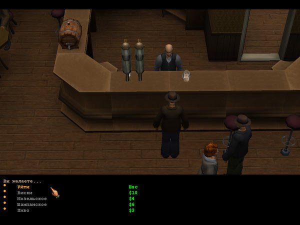
В окне диалога выводится список возможных вариантов (если список длинный, в правой части окна отображается линейка прокрутки). Выберите ответ (в нашем примере — закажите напиток), щёлкнув по выбранному пункту; главный герой продолжит диалог. Обратите внимание, что вступить в диалог с барменом можно несколько раз, делая различные заказы, причём сделанный выбор может повлиять на дальнейший ход диалога. Возможность (или невозможность) обращаться к персонажу неоднократно и выбирать при этом разные варианты ответа зависит от конкретных обстоятельств.
В этом подразделе мы подробно рассмотрим стрельбу из огнестрельного оружия, которое имеет в игре большое значение. Действия другими видами оружия перечислены в следующем подразделе.
Режимы стрельбы
Любое огнестрельное оружие рассчитано на определённый вид стрельбы, некоторые виды оружия более универсальные, другие более специализированные. Большинство видов оружия способно производить одиночные выстрелы, некоторые способны стрелять очередями, существуют разновидности пистолетов-пулемётов, стреляющих только очередями, поскольку одиночная стрельба из них не предусмотрена конструкцией. Виды стрельбы, на которые рассчитано то или иное оружие, и расход AP в каждом из режимов можно прочитать в контекстной подсказке.
В игре предусмотрено три типа одиночных выстрелов: выстрел навскидку, прицельный выстрел и меткий выстрел. Они различаются по расходу AP и вероятности попадания.
Выстрел навскидку выполняется почти без прицеливания. Его преимущество — в малом расходе AP, что делает его эффективным при стрельбе с очень близкого расстояния, когда вероятность попадания сама по себе достаточно велика. Персонаж в течение одного хода может сделать несколько выстрелов навскидку и получить дополнительные шансы поразить противника.
Прицельный выстрел требует большего расхода AP, но значительно эффективнее по вероятности попадания. Обычно за один ход персонаж может сделать 1-2 прицельных выстрела, но у него остаётся некоторое количество AP, которое можно использовать для других целей — например, чтобы занять более выгодную позицию или спрятаться в укрытии.
Меткий выстрел использует весь запас AP, который есть у персонажа, а минимальный порог AP выше, чем у прицельного выстрела. По вероятности попадания меткий выстрел близок к снайперской стрельбе. Эта разновидность стрельбы эффективна при стрельбе на больших расстояниях, когда важно поразить противника, а необходимость укрыться от ответного огня не так актуальна.
При стрельбе очередями есть две разновидности — короткая очередь и длинная очередь. Короткая очередь требует среднего расхода AP, но число выпущенных пуль невелико (обычно 3 или 4, это число можно прочитать в подсказке к оружию). Длинная очередь использует весь запас AP, который есть у персонажа, и прекращается, если у персонажа исчерпаны AP, или кончились боеприпасы, или персонаж обнаружил, что противник поражён. Стрельба очередью достаточно эффективна на малом и среднем расстоянии, несмотря на низкую вероятность попадания отдельной пули, — именно это значение выводится рядом с курсором.
Для выбора режима стрельбы нажмите кнопку «режим атаки» на кнопочном поле и выберите кнопку нужного режима. Клавиатурные команды: [ Q ] , [ W ] , [ E ] — «выстрел навскидку», «прицельный выстрел», «меткий выстрел» [ F ] , [ G ] — «короткая очередь», «длинная очередь».
Снайперская стрельба
Эта разновидность стрельбы требует специальной снайперской винтовки с оптическим прицелом. Эффективность снайперской стрельбы сильно зависит от соответствующего навыка, в наибольшей степени им обладают профессиональные снайперы. Снайперская стрельба возможна только по видимым снайперу целям (в отличие от всех остальных режимов стрельбы, которыми можно стрелять на слух или по целям, обнаруженным другими персонажами). Выстрел из снайперской винтовки по цели, обнаруженной на слух, соответствует выстрелу навскидку.
Достоинство снайперской стрельбы состоит в точном прицеливании, которое может длиться больше одного хода, и обеспечивает очень высокую вероятность попадания, в том числе в заданную часть тела. Это даёт возможность вывести из строя цель с одного выстрела. Основной недостаток этого вида стрельбы — снайпер должен оставаться неподвижным, а передвижение цели может и должно быть ограниченным, что трудно выполнить в условиях ближнего боя.
Снайперская стрельба имеет ряд особенностей. Во-первых, выстрел производится не сразу, а после прицеливания: щелчок курсором по цели даёт команду начать процесс прицеливания, что требует некоторого расхода AP. Во-вторых, в отличие от других видов стрельбы расход AP на прицеливание можно менять в широких пределах. В-третьих, во многих случаях можно «переносить» прицеливание на следующий ход, что даёт возможность продолжить прицеливание, уже имея наведённую винтовку с высоким значением вероятности попадания.
Снайперское прицеливание, перенесённое на следующий ход, может быть сброшено по ряду причин: во-первых, если цель пропала из поля зрения снайпера или вышла за пределы угла прицеливания (около 45 градусов); во-вторых, если во время хода противника снайпер получил любое критическое поражение или за счёт ранений потерял значительную долю здоровья (VP); наконец, если снайпер сдвинулся под действием взрывной волны или оружие было выбито у него из рук.
Для переключения в режим снайперской стрельбы необходимо выбрать его на кнопочном поле или нажать клавишу [ T ] . Чтобы начать прицеливание, наведите курсор на цель и щёлкните по ней. Снайпер поднимет винтовку и наведёт её на цель, после чего вы сможете управлять процессом прицеливания с помощью 4 кнопок на кнопочном поле:
Добавить все AP — использовать весь запас AP для прицеливания и перенести прицеливание на следующий ход.
Добавить и зарезервировать — использовать для прицеливания весь запас AP, за исключением того количества, которое необходимо для выстрела.
Добавить 10 AP — использовать для прицеливания 10 AP.
Добавить 1 AP — использовать для прицеливания 1 AP.
Две нижние кнопки на кнопочном поле позволяют сделать выстрел (клавиатурная команда [ A ] ) или отменить снайперскую стрельбу (клавиатурная команда [ Esc ] ).
После выбора режима снайперской стрельбы меняется поле зрения персонажа: благодаря оптическому прицелу увеличивается дальность зрения, но существенно уменьшается угол обзора. Поэтому при переключении в режим снайперской стрельбы персонаж противника, находящийся сбоку, может стать невидимым. Укажите вашему персонажу смотреть точно на противника (клавиша [ L ] ).
Для эффективного использования запаса AP желательно постоянно проверять вероятность попадания и прекращать расход AP на прицеливание, когда она достигнет требуемой величины. Снайперу требуется меньше AP, чтобы произвести выстрел с той же эффективностью, как «меткий выстрел» в обычном режиме. Если не удалось поразить цель с первого раза, желательно вложить в прицеливание неизрасходованные AP и перенести выстрел на следующий ход.
Количество AP, которое снайпер может вложить в прицеливание, определяется навыком «снайперский огонь». При большой величине этого навыка можно вкладывать в прицеливание больше AP, чем доступно у персонажа за ход, с помощью переноса прицеливания на следующий ход. Для этого нужно нажимать кнопку «добавить все AP» на каждом ходу — до тех пор, пока она остаётся активной. Учтите, что прицеливание с переносом хода будет сбито, если цель выйдет за пределы обзора или если снайпер получит критическое ранение.
Стрельба по частям тела
Если цель видимая, можно стрелять не по фигуре в целом, а по отдельной части тела. Несмотря на меньшую вероятность попадания, это в некоторых случаях даёт преимущество, поскольку может нанести персонажу противника критическое поражение, которое существенно ухудшит его способности (особенно при попадании в голову). Для выбора части тела при выстреле нужно нажать и удерживать одну из клавиш дополнительного цифрового поля.
[ 8 ] — выстрелить прицельно в голову;
[ 4 ] — выстрелить прицельно в левую руку;
[ 5 ] — выстрелить прицельно в туловище;
[ 6 ] — выстрелить прицельно в правую руку;
[ 1 ] — выстрелить прицельно в левую ногу;
[ 3 ] — выстрелить прицельно в правую ногу.
При нажатии одной из перечисленных клавиш появляется специальный курсор, на котором выбранная часть тела будет отмечена красным цветом.
Обратите внимание, что при снайперской стрельбе нужно удерживать клавишу в момент выстрела, нажатие клавиши при прицеливании даёт лишь возможность оценить вероятность попадания.
Стрельба по невидимым целям
Ваши персонажи могут стрелять не только по противникам, которых они видят сами, но и по противникам, попавшим в поле зрения других членов группы (их иконки отображаются серым цветом), а также по не видимым, но слышимым целям (красная полупрозрачная фигура и иконка с изображением уха).
Если цель не попадает в поле зрения данного персонажа из-за преград, эффективность стрельбы по ней зависит от способности пули или снаряда пробить препятствие. Например, листва кустарника позволяет близко подобраться к противнику и выстрелить с высокой эффективностью по фигуре, которую видят находящиеся на расстоянии члены группы. Если цель не видна персонажу, поскольку находится на расстоянии, превышающем радиус зрения, то способность поразить её зависит от дальности действия оружия.
По цели, обнаруженной на слух, нельзя вести снайперскую стрельбу и прицеливаться в определённые части тела. Вероятность попадания по ней выводится условно, в предположении, что персонаж стоит. Стрельба по такой цели связана с некоторым риском. Во-первых, вы можете застрелить нейтрального персонажа и даже персонажа, взаимодействие с которым необходимо по сюжету, что способно привести к провалу кампании или значительно усложнить выполнение вашей задачи. Во-вторых, при стрельбе по слышимой фигуре точное местонахождение и поза персонажа неизвестны, и попасть в персонажа намного сложнее. Наконец, вы далеко не всегда способны оценить результат своего выстрела из-за «призрачных образов».
Использование оружия и предметов
Перезарядка
Любое стрелковое оружие имеет ограниченный запас боеприпасов и требует периодической перезарядки. Персонаж может перезарядить только то оружие, которое находится у него в руках, для этого служит кнопка «перезарядить» в окнах текущих предметов на игровой панели или клавиатурная команда [ R ] . В обычных режимах стрельбы, когда боеприпасы закончились, курсор при наведении на цель принимает вид «перезарядка», что даёт возможность перезарядить оружие, щёлкнув по цели. Перезарядка требует расхода AP, для некоторых видов оружия — довольно значительного. Его можно уменьшить, имея специальный навык, или обойтись совсем без перезарядки, поменяв оружие в ходе боя на другое заряженное. При отсутствии у персонажа боеприпасов, необходимых для перезарядки оружия, кнопка «перезарядить» становится недоступной, на ней отображается боеприпас, перечёркнутый крестом.
В режиме реального времени перезаряжать оружие можно произвольным образом — например, извлекая часть патронов из других обойм; главное, чтобы среди ваших боеприпасов были нужные патроны. Если вы перезаряжаете не полностью разряженный магазин или обойму, часть патронов будет взята из заряженных магазинов.
В пошаговом режиме, т.е. в бою, на перезарядку накладываются определённые ограничения. Во-первых, для перезарядки требуется обойма или магазин, совместимый с оружием данного вида. Во-вторых, в этом магазине или обойме должно быть больше патронов, чем в магазине текущем оружии. Тактическая перезарядка реализуется сменой магазина. Если у вас есть нужные патроны, но они размещены в обоймах для другого оружия, можно дозарядить текущий магазин, это потребует удвоенного расхода AP.
Совет: заблаговременно делайте запас заряженных магазинов для всех имеющихся у вас экземпляров оружия.
Стационарное оружие
На некоторых зонах вам может встречаться оружие, установленное на стационарных платформах. Вы не можете взять и унести его с собой, однако ваши персонажи могут вести из него огонь. Как правило, стационарное оружие обладает большой огневой мощью, но имеет ряд ограничений. Обычно оно имеет ограниченный угол поворота, в результате вам нужно ждать, пока противник окажется в секторе обстрела. Ему требуются специальные боеприпасы в виде лент, обойм или кассет. Довольно часто нужные боеприпасы лежат поблизости от такого оружия.
При наведении курсора на стационарное оружие он принимает вид «действие». Как правило, требуется достаточно большой расход AP, чтобы персонаж занял место и приготовился к стрельбе. О типе оружия и текущем количестве боеприпасов можно судить по информации в окне, которое появляется на игровой панели вместо двух окон оружия персонажа. Стационарное оружие обычно не имеет большого числа режимов стрельбы, но если они есть, их можно переключать стандартным способом.
Заклиненное стационарное оружие можно исправлять обычным способом. Закончив стрельбу, снова щёлкните по стационарному оружию или нажмите кнопку «отмена», чтобы персонаж отошёл и продолжил действовать в обычном режиме.
Другие виды оружия
Кроме огнестрельного оружия, ваши персонажи могут пользоваться холодным оружием ближнего боя, метательным оружием, гранатами и минами. Использование этих видов оружия наиболее эффективно, если у персонажа есть соответствующая специальность и навык.
Звёздочки-сюрикены и диски предназначены для метания с небольшого расстояния. Ножи имеют два вида атаки: как метательное оружие и как оружие ближнего боя (в интерфейсе предусмотрено переключение режимов). Кинжалы и более крупные виды холодного оружия более эффективны в ближнем бою. Достоинство холодного оружия — бесшумность: атака не привлекает внимания других персонажей противника. Общий недостаток холодного оружия — необходимо приблизиться к противнику незамеченным, что трудно сделать кому-либо, кроме разведчика.
У гранат есть два режима применения — бросок и установка ловушки на дверь, окно или ворота. Переключение режимов выполняется так же, как для огнестрельного оружия. Для поражения противника гранату бросают ему под ноги, прицельная атака ей невозможна. Кроме того, гранаты можно использовать для выбивания дверей, создания брешей в стенах и т.д. Дальность броска гранаты зависит от её веса и силы персонажа, наилучшим образом это может делать гренадёр (особенно это относится к тяжёлым осколочным гранатам, которые могут поразить самого атакующего). Установка гранаты-ловушки доступна любому персонажу, но высокий инженерный навык позволяет установить ловушку, которую противнику будет сложнее обнаружить.
Мины можно ставить на дорогах, где передвигаются патрули противника, а также использовать их для создания проходов в заборах, стенах и т.д. взрывным методом. Мину, как и ловушку, может поставить любой персонаж, но высокий инженерный навык сделает её более скрытной. Поставленная мина или граната-ловушка отмечается белым контуром, ваши персонажи будут её обходить. Для обнаружения и мин, и ловушек требуется инженерный навык или очень высокий навык «наблюдательность», а для обезвреживания — инженерный навык. Снятую мину или гранату можно использовать повторно.
Инженерные предметы
Инженерные предметы делятся на две группы: инструменты, использующиеся для разминирования, и отмычки. Инструменты используются только для обезвреживания взрывоопасных предметов и не помогают их обнаружить. Чтобы воспользоваться предметом, необходимо взять его в руку. Без использования такого инструмента обезвреживание мины невозможно. Некоторые инструменты требуют высокого инженерного навыка, но при этом увеличивают его эффективное значение для выполнения задач разминирования. Каждый предмет можно использовать ограниченное число раз.
К инженерным предметам относятся кусачки для резки проволоки. Их можно использовать для преодоления проволочных заграждений и проделки проходов в проволочных заборах, для других операций они непригодны. Внешне похожи на них кусачки для разминирования, однако они отличаются по своему назначению.
Отмычки служат для открывания замков. Отмычки действуют универсально, т.е. ими можно попытаться открыть любой замок, но число использований у них ограниченно. Попытка открыть замок отмычкой требует затраты 30 AP, шанс удачного применения отмычки зависит от инженерного навыка.
Медицинские предметы, лечение
Медицинские предметы делятся на 3 основные группы: перевязочные средства, хирургические инструменты и медикаменты. К перевязочным средствам относятся пластыри, бинты, аптечки первой помощи и кровоостанавливающий порошок. Этими средствами лечат ранения и кровотечения. Хирургические инструменты позволяют вылечить критические поражения. Многие из них требуют высокого уровня навыка «медицина», но, в свою очередь, увеличивают суммарное значение этого навыка при применении. Наконец, медикаменты (обезболивающие средства и стимуляторы) дают возможность временно компенсировать эффекты от поражений, полученные персонажем или временно повысить те или иные параметры персонажа. Применение медикаментов требует высокого медицинского навыка, кроме того, все они имеют определённые побочные эффекты — например, персонаж в течение определённого числа ходов не сможет лечиться какими-либо медикаментами. Поэтому перед приёмом медикамента следует внимательно ознакомиться с его действием.
Раненых членов группы желательно своевременно перевязывать, это прекращает постоянную потерю VP за счёт кровотечения, полностью или частично восстанавливает снижение тех или иных способностей, вызванное ранением. Эффективность оказания медицинской помощи зависит от медицинской квалификации.
Чтобы оказать помощь другому члену группы, персонажу, который будет лечить (медик или член группы с достаточным медицинским навыком), необходимо взять в руки соответствующий медицинский предмет (перевязочный пакет или пластырь, инструмент или медикамент). Курсор примет вид «лечение» при наведении на фигуру раненого члена группы или на его закладку; в пошаговом режиме рядом с курсором будет показан расход AP. После начала лечения медик не способен выполнять какие-либо другие действия в течение всего времени лечения, которое может растянуться на несколько ходов (лечение можно прервать в любой момент). У раненого персонажа способность к действиям в процессе лечения частично сохраняется: он не может передвигаться, но может вести огонь, находясь на месте.
Прочие предметы
В ходе кампании вы можете находить или получать различные предметы, которые могут быть использованы по обстановке (переданы другим персонажам, проданы в магазине, отложены на будущее и т.д.). Решать, где и как использовать тот или иной предмет, в конечном счёте должны вы; возможно, это удастся сделать не с первого раза. Вот некоторые подсказки:
- Учебные книги (наставления по стрелковому делу, справочник фельдшера и т.д.) можно использовать для повышения определённых навыков одного из ваших персонажей. Возьмите книгу в руки и нажмите кнопку «использовать». Изучение литературы требует некоторого времени и невозможно в боевой обстановке.
- Ценные предметы (ювелирные изделия) можно продать в магазине или лавке, получив за них определённую сумму денег. Однако учтите, что владелец не каждой лавки может согласиться их купить.
- Удостоверение личности (ID) достаточно иметь среди предметов, лежащих в «рюкзаке», — персонаж сам способен воспользоваться им в нужный момент. «Правильное» удостоверение может помочь вам решить возникшую проблему «дипломатическим» путём, в то же время «неправильное» удостоверение способно само стать источником серьёзных проблем для его владельца...
Совет: любой новый предмет пробуйте дать в руки главному герою и смотрите, какие действия становятся доступны на кнопочном поле команд.
Выход из зоны
Возможность выйти из текущей игровой зоны на карту региона (и перейти в другую зону) зависит от нескольких причин.
Прежде всего, у вас не должно оставаться в текущей зоне невыполненных заданий, которые критически важны для развития сюжета. Например, в начале кампании вы не сможете покинуть вторую зону до тех пор, пока не уясните обстановку и не поймёте, что делать дальше. На практике это означает необходимость отразить атаку противника на посёлок, найти способ связаться с Центром, доложить обстановку и получить новое задание. Иногда вам может помочь просмотр журнала или диалог с нейтральными персонажами, возможно, неоднократный. В некоторые зоны вы можете попасть помимо своего желания, и вы также не сможете покинуть их до того, как сумеете разрешить внезапно возникшую проблему.
Если критически важных невыполненных заданий у вас нет, то в принципе выход из зоны возможен в любое время. Однако, если на зоне присутствует противник, необходимо либо перейти в режим реального времени, либо добраться всей группой до края зоны. Режим реального времени означает, что ни вы, ни противник (если он остался в зоне) не находитесь в прямом контакте. В этом случае становится доступной кнопка «Выход» — предполагается, что группа в состоянии добраться до границы зоны, не встретившись по дороге с противником.
Цвет кнопки «Выход» на панели управления определяет возможность выхода из зоны:
| красный |
выход невозможен: либо не выполнено задание, необходимое по сюжету, либо в зоне есть персонажи противника |
| жёлтый |
возможен выход по краю зоны, в зоне остаются противники |
| зелёный |
выход возможен, все противники, находившиеся в зоне, уничтожены |
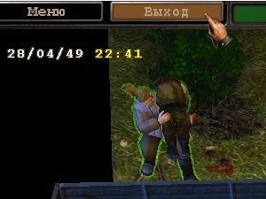
Если вы ведёте бой с противником, выйти из зоны можно единственным способом — через край зоны. Для этого необходимо собрать всех членов группы у кромки (в полосе шириной 4 шага), чтобы кнопка «Выход» из красной стала зелёной или жёлтой, затем нажать эту кнопку. Не забудьте забрать с собой ваших персонажей, находящихся без сознания.
Области перехода
В некоторых зонах существуют области перехода, которые ведут в другие (связанные) зоны, переход происходит без выхода на карту территорий. Такая область может выглядеть как светлый полупрозрачный прямоугольник на краю зоны — например, на дороге. Чтобы перейти в другую зону, нужно собрать всех членов группы внутри этой области. Другими областями перехода могут служить люки или колодцы, ведущие под землю (вниз) и вертикальные лестницы в подземных уровнях, которые ведут на поверхность (вверх). Для перехода необходимо подвести всех членов группы вплотную к такому объекту, а затем щёлкнуть по нему курсором. Выйти из текущей зоны через область перехода можно в любой момент.